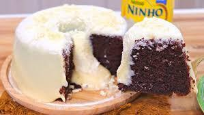

Receita de Bolo de Chocolate
Hoje você irá aprender uma simples e deliciosa receita de bolo de chocolate. Para prepara-lá, será necessário os seguintes ingredientes:
- 2 xícaras de farinha de trigo;
- 1 xícara de açúcar;
- 1 xícara de cacau;
- 1 xícara de leite;
- 1/2 xícara de óleo;
- 3 ovos;
- 1 colher de sopa de fermento em pó;
- 1 pitada de sal;
- 1 lata de leite condensado;
- 1 colher de sopa de manteiga;
- 1 caixa de leite condensado (395g);
- 2 colheres de sopa de leite em pó;
- 1 caixinha de creme de leite (200g).
Modo de preparo:
- Preaquecer o forno a 180°C;
- Misture os ingredientes secos: adicione a farinha de trigo, açúcar, cacau em pó, fermento em pó e uma pitada de sal;
- Adicione os ingredientes liquidos: coloque o leite, óleo e os ovos junto dos ingredientes secos. Misture tudo ate ficar homogênea;
- Unte uma forma com manteiga e farinha para facilitar a retirada do bolo;
- Despeje a massa na forma untada e leve ao forno preaquecido por cerca de 30 a 40 minutos;
- Retire do forno e deixe esfriar até ficar em temperatura ambiente.
Para a cobertura:
- Adicione o leite condensado em uma panela separada;
- Acrescente as 2 colheres de leite em pó e misture bem;
- Depois adicione 1 caixinha de creme de leite, para que não deixe a cobertura enjoativa;
- Misture tudo em fogo baixo até dar ponto de brigadeiro;
- Retire a cobertura do fogo e despeje sobre o bolo.
